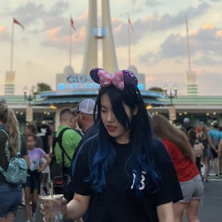

Toronto, Canada

Jin Zeng
An ordinary data scientist.
Nothing special going on here. I forecast things, and lately I talk large language models into behaving themselves inside other people's security perimeters. Seventeen engagements, eleven industries, an enormous amount of messy data.
Manager, Data Science & AI Consulting at IBM
- Revenue forecasting for US and European equities, investment management, March 2019 to July 2022. Machine learning.
- Weather impact on macroeconomic indicators, banking, October to November 2019. Machine learning.
- News-driven alpha forecasting dashboard, banking, December 2019 to January 2020. Machine learning.
- Insurance data quality validation, pension and insurance, March to April 2021. Data engineering.
- Parts demand forecasting enhancement, aerospace manufacturing, March to August 2022. Machine learning.
- Customer classification models, postal and logistics, April to May 2023. Machine learning.
- Generative AI proposal advisor, professional services, July to December 2023. Generative AI.
- Revenue identification model with generative AI reporting, postal and logistics, February to May 2024. Machine learning and generative AI.
- Enterprise retrieval platform remediation, public sector, May to June 2024. Generative AI.
- Secure multi-model conversational AI platform, public sector, July to August 2024. Generative AI.
- Generative AI assets and accelerators programme, public sector, August to December 2024. Generative AI.
- Bilingual HR and pay concierge assistant, public sector, January to June 2025. Generative AI.
- Generative AI voice assistant, healthcare, June to December 2025. Generative AI.
- ERP configuration agents, telecommunications, January to March 2026. Generative AI.
- AI-assisted volume nomination workflow, energy, March to May 2026. Machine learning and generative AI.
- Governance risk assessment agent, public sector, May to July 2026. Generative AI.
- Agentic work package drafting assistant, construction and infrastructure, June 2026 to present. Generative AI. Current engagement.
- Generative AI & agentic
- ML & data engineering
- Both
Now Agentic assistant for inspection-plan drafting Construction & infrastructure
- Years in practice
- 7 or more
- Engagements led
- 17
- Industries served
- 11
- Degrees earned
- 4
Where I've worked
Seven years of turning messy enterprise data into decisions
Advanced degrees in statistics, economics and computer science, then a consulting career spent alternating between two things I like equally: squeezing accuracy out of a forecasting model, and getting a language model to behave inside somebody's security perimeter. Lately more of the second. Client names are left out here on purpose — industries and outcomes tell you what you need.
-
Manager, Data Science & Consulting
Own delivery and technical direction across generative AI and analytics engagements. Set solution architecture, run the sprint cadence, and carry the story into the room where budget decisions get made. Mentor data scientists and lead the knowledge-sharing that stops each team relearning the same lesson.
-
Data Scientist → Senior Data Scientist
Delivered analytics and AI for financial institutions in Canada and the US, plus government, healthcare, utilities, automotive, luxury retail, aerospace and postal clients. Work spanned fraud detection, supply optimisation, revenue forecasting, pricing strategy, news-impact modelling on equities, and marketing performance measurement — then, from 2023 onward, secure enterprise chatbots and agentic systems.
Built the unglamorous parts too: scalable pipelines feeding the models, a feature-selection method, an NLP approach, a web scraper, and Azure and AWS integrations pulling internal and external sources together.
-
ICG Technology Analyst, Credit Technology
Supported New York credit trading desks across pricing, risk, electronic trading and trade capture — vanilla bonds through exotic options. Translated between traders and engineers, monitored the daily job chain, and cleared the ticket queue around script deployments.
-
Thesis research — Monte Carlo option pricing
Priced Asian and basket options by simulation. Solved the constant-volatility PDE for the Asian call to establish a benchmark, then compared naïve Monte Carlo, antithetic variates and control variates on absolute error, mean squared error and compute time. Graded 11.83 / 12.
Selected engagements
Seventeen projects, two families of problem
Every client here is anonymised to an industry. Named platforms are my employer's own products or public cloud services, never a client's system.
Showing all 17 engagements.
-
Agentic assistant for inspection-plan drafting
Lead Data Scientist
A generative AI assistant that drafts inspection and test plans from a repository of historical references. The client's own LLM runs inside their SageMaker environment so nothing sensitive leaves their account. Agentic workflows, document tagging and summarisation sit behind a chat interface; phase two scaled coverage to roughly 600 reference documents.
What I did
- Led the technical delivery team — solution architecture, design calls, sprint execution — across data scientists, architects, developers, project managers, product owners and client specialists.
- Architected the end-to-end solution: in-account LLM deployment, agent workflows, document processing, and the chat experience, all inside the client's security and privacy constraints.
- Designed a document-intelligence framework with a tagging system that classifies historical inspection documents and drives rule-based template recommendation.
- Added summarisation so users can judge a long document without opening it.
- Ran data validation and curation with SMEs; defined selection criteria and built the ingestion pipelines behind them.
- Drove target-state blueprint and feature-prioritisation workshops, assessing feasibility and complexity against business value to shape the roadmap.
- Defined the evaluation framework and user-acceptance rubrics for generated output — quality, completeness, and fit to requirement.
- Facilitated daily technical syncs and bi-weekly demos to keep stakeholders close to the build.
-
Risk-assessment agent for a governance workflow
Technical Lead
An agent that modernises a manual governance review: it detects what changed, drafts the risk assessment, and produces the standard report deck. Built on a low-code agent platform over enterprise LLMs, with a human in the loop on every output. The proof of concept hit its two targets — half the analyst effort, 90% change-detection accuracy.
What I did
- Ran discovery workshops to map the end-to-end review workflow and find where the manual bottlenecks actually were.
- Prioritised the risk-assessment agent as the first use case on business impact, feasibility and readiness — with the specialists, not at them.
- Built the proof of concept: automated change detection, AI-assisted assessment, structured risk summaries, and generated PowerPoint reporting.
- Designed the evaluation strategy — benchmarking against historical cases plus human validation of generated output.
- Set the performance targets (50% effort reduction, 90% detection accuracy) and verified the build met them.
-
AI-assisted volume nomination workflow
Lead Data Scientist
Commercial analysts were hand-translating production forecasts into daily volume nominations. This turns that into a recommendation the analyst reviews — constraint-aware, variance-tracked, and honest about where the forecast is drifting. The shift is from processing every nomination to managing the exceptions.
What I did
- Designed the recommendation framework that turns production forecasts into structured daily nomination proposals.
- Built an accuracy monitoring dashboard that attributes prediction variance to its root cause across wells and assets.
- Wrote logic that adjusts recommendations for storage capacity, outages and deferment schedules.
- Implemented variance tracking across prior nominations, actual production and revised forecasts to surface commercial exposure early.
- Used deferment data for time-series insight generation to improve production visibility.
- Applied LLMs to unstructured operational records, pulling relevant production detail out of free text.
- Prototyped the visualisations stakeholders asked for — forecast deviation, operational impact indicators.
- Co-designed the future-state workflow with commercial analysts and operations.
-
Agents that configure an ERP system
Lead Data Scientist
ERP implementations lose weeks to functional analysts clicking through configuration screens. These agents read a standard spreadsheet and do the setup — company codes, chart of accounts, fiscal year variants, controlling structures — with an analyst approving before anything commits. Roughly 95% less manual configuration time.
What I did
- Designed and built configuration agents automating business setup tasks, cutting manual configuration time by about 95%.
- Built a knowledge-based execution framework covering 19+ configuration steps from standardised instructions.
- Wrote orchestration logic that processes multi-row inputs from standard Excel templates, so setup runs in batches.
- Handled credentials through a secret manager rather than anything hand-rolled.
- Established queue-based pipelines for sequential execution and run stability.
- Benchmarked several LLMs across two clouds for agent performance and reliability.
- Kept a human approval gate on every automated output.
- Left reusable automation patterns behind for financial reporting, compliance validation and procurement.
-
Generative AI voice assistant
Lead Data Scientist
An enterprise voice bot replacing exact-match, rule-based intent detection with an LLM-driven architecture, to raise self-service containment. Paired with LLM-based reason tagging so the team could finally see why callers were dropping off.
What I did
- Replaced rule-based intent matching with an LLM-driven voice bot architecture, improving self-service containment.
- Led design and build of LLM-based reason tagging to classify call outcomes and drop-off points.
- Designed the supporting architecture and provisioned the services for transcript processing and analysis.
- Guided client developers on secure transcript storage and credential management for cloud object storage.
- Flagged PII and PHI exposure and enforced a mocked-data approach for the proof of concept to stay compliant.
- Ran the drop-off analysis and turned it into the recommendations that shaped the next model iteration.
-
Bilingual HR & pay assistant
Lead Data Scientist
The engagement I'd point to first. A bilingual RAG assistant answering both general HR questions from public web content and individual pay questions from structured records — one interface, two very different retrieval problems. Piloted on OpenShift, then migrated to Azure with AI Foundry and a NoSQL vector store for the pre-production phase. Guardrails, bias evaluation and table comprehension were requirements, not extras.
What I did
- Led delivery of a scalable, production-bound assistant, steering the technical streams and holding the line on client architecture and compliance requirements.
- Extended scope from general HR queries to personal pay questions, using mocked records for anything sensitive.
- Co-built ingestion pipelines for real-time and batch scraping of public web pages, tuning chunking and the embedding of HTML tables — the part everyone underestimates.
- Integrated Elasticsearch with semantic search to improve relevance and survive user typos.
- Ran A/B testing to select the LLM on coherence, accuracy and hallucination rate.
- Built the prompt layer that structures answers, adds file references, and keeps the front end readable.
- Implemented the first round of guardrails and error handling.
- Defined and tracked the metrics: ROUGE, BLEU, BERTScore, perplexity, lexical diversity, bias assessment.
- Directed a PostgreSQL-backed acting-pay explanation module, encoding which scenarios apply to whom.
- Ran guided user-testing sessions and turned the feedback into the deployment-readiness backlog.
- Contributed to the longer-term migration plan, including automated ingestion refresh and expanded French-language guardrails.
-
Generative AI assets & accelerators programme
Lead Data Scientist
Less a single build than a campaign: find where generative AI genuinely helps across several work streams, prove it, and teach the client enough that adoption outlives the engagement. Ideation, feasibility assessment, working demos, education sessions.
What I did
- Worked across streams to stand up 30+ AI assistants that read documents, automate workflow steps and cut busywork.
- Built tools for requirements gathering, impact assessment, stakeholder mapping and code generation.
- Identified OCR improvements using vision LLMs for the hard cases — name extraction, handwritten responses.
- Helped a mapping team finish their future-state deliverables, supplying the code assets and demos their final report depended on.
- Ran education sessions that moved client and internal understanding of generative AI from anxiety to adoption.
-
Secure multi-model conversational AI platform
Lead Data Scientist
A conversational AI application for public-sector use: multiple models behind one governed surface, retrieval over both structured and unstructured sources, and AI governance wired in from the start because the data protection standards left no other option.
What I did
- Led several AI-customisation streams, driving retrieval-augmented generation across structured and unstructured data.
- Assessed the existing application, found the platform gaps, and upgraded the vector database to handle unstructured content properly.
- Built new structured-data capability and the prompt engineering behind coherent, defensible answers.
- Presented business and technical results to the client weekly — the habit that keeps a pilot from drifting.
-
Enterprise retrieval platform remediation
Lead Data Scientist
A pilot that wouldn't work in the client's environment. Diagnosed and fixed it, kept sensitive data inside their boundary throughout, and made ingestion seven times faster on the way out.
What I did
- Diagnosed and resolved the blocking issues, ensuring sensitive data stayed put and no unauthorised transfer occurred.
- Ran the test cycles and improved re-ranking and prompt engineering to get coherent, robust answers.
- Raised file-ingestion throughput sevenfold on the chatbot platform.
- Backed the project manager in client communication so expectations tracked reality.
-
Revenue identification model with generated executive reporting
Senior Data Scientist
A model to find high-potential growth accounts and under-penetrated shipping lanes, with generative AI writing the account-specific executive briefing on top. Recall went from just over 50% to 72%, surfacing more than $19M in opportunity — and with it, a noticeable change in how much the client trusted the numbers.
What I did
- Improved recall from just over 50% to 72%, identifying $19M+ in opportunity.
- Directed 20+ documented script assets across data engineering, aggregation and penetration analysis.
- Owned feature engineering and wrote the data and feature dictionaries the client still uses to read the model.
- Trained junior data scientists while carrying the bulk of the technical work through shifting targets.
- Kept client communication proactive, and presented to every stakeholder group myself.
-
Generative AI proposal advisor
Senior Data Scientist · engineering & front-end maintainer
A RAG advisor for responding to requests for proposal. Drop documents in a folder, pick a business domain, get a drafted answer grounded in what the organisation has actually said before. I also kept the UI alive and the server standing.
What I did
- Integrated Watson Discovery with cloud storage and LangChain so retrieval was as simple as dropping a file in a folder.
- Engineered the prompts that turn a general model into a credible proposal advisor.
- Let users select a business domain so answers came back tailored rather than generic.
- Ran the parameter sweep — chunk size, chunk count, overlap, embedder, vector store, retrieval method, model mode.
- Measured with ROUGE and folded user feedback into each iteration.
- Maintained the UI, watched domain scaling, set up the Ubuntu server, configured CUDA, and worked out what production capacity would actually cost.
-
Customer classification from profile data
Senior Data Scientist
Joined several client datasets and put gradient boosting and random forests against the same classification problem, to show what profile-based customer classification could do for their targeting before anyone committed to building it.
What I did
- Led the analytics: combined disparate customer datasets and compared XGBoost against random forest.
- Demonstrated the targeting upside concretely enough for the client to act on it.
-
Parts demand forecasting enhancement
Senior Data Scientist
Existing demand forecasts at region-and-month granularity, made better by feeding them macroeconomic data and weather. Collected IMF macro series, joined weather from an insights engine, then used sequential feature selection to cut the feature count back down. Mean absolute error improved — substantially in APAC.
What I did
- Collected IMF macroeconomic data and integrated it with weather data from an insights engine.
- Applied sequential feature selection — LightGBM, lasso regression, correlation — to reduce dimensionality without losing signal.
- Evaluated on mean absolute error; gains varied by part type and region, with the largest average improvement in APAC.
-
Insurance data quality validation
Consultant & Data Scientist
Quality validation across home and auto insurance data for an actuarial analytics programme. The deliverable was a data quality report — findings, visualisations, and what to fix first.
What I did
- Led the validation work across home and auto insurance data, checking integrity and accuracy.
- Delivered a data quality report with the visualisations and prioritised recommendations behind it.
-
News-driven alpha forecasting dashboard
Data Scientist & front-end developer
A dashboard forecasting alpha — the unexplained part of a stock's return — from news. Joined ticker metadata to performance, computed returns on VWAP, and built a custom sentiment dictionary per sector rather than trusting one general-purpose lexicon.
What I did
- Merged ticker information with stock performance and calculated returns using VWAP.
- Built sector-specific dictionaries on top of an NLP asset to sharpen sentiment signal.
- Modelled and visualised the relationships driving alpha, then shipped it as a dashboard the desk could use.
-
Weather impact on macroeconomic indicators
Consultant
Research into how weather moves GDP. Feature engineering over weather and GDP time series, then the analysis and modelling, then the deck that made the findings land with a non-technical audience.
What I did
- Led the research on weather's impact on GDP.
- Engineered features from weather and GDP time series, then led analysis and modelling.
- Presented the patterns and their implications to the client directly.
-
Revenue forecasting for US & European equities
Data Scientist
My longest-running engagement: raising revenue-forecast hit rate across 1,000+ listed companies. Success on US equities got the mandate extended to Europe. Alternative data — search trends, news, weather — feature-engineered and selected down, with a random forest coming out ahead. Then three years of keeping the daily pipelines running and the client confident.
What I did
- Implemented revenue forecasting analytics for US equities, improving forecast accuracy enough that the scope expanded to European equities.
- Collected and cleaned raw client data alongside search-trend, news and weather sources.
- Generated features from time-series and NLP analysis, ran feature selection, and landed on a random forest as the best performer.
- Ran daily operations for the critical pipelines so results arrived on schedule, every schedule.
- Maintained reliability and the client relationship over three years — the least glamorous, most valuable part.
Toolkit
What I build with
Generative AI & agentic
- LLMs
- RAG (structured & unstructured)
- Agentic workflows
- Prompt engineering
- LangChain
- Vector databases
- Re-ranking
- Guardrails
- Human-in-the-loop design
- LLM evaluation
- AI governance
Machine learning & analytics
- Forecasting
- Time series
- XGBoost
- Random forest
- LightGBM
- Lasso
- Sequential feature selection
- Feature engineering
- NLP & text analytics
- Sentiment analysis
- Data visualisation
Languages & engineering
- Python
- SQL
- R
- PySpark
- MATLAB
- Linux / Unix
- Docker
- Git
- PostgreSQL
- Elasticsearch
- Data pipelines
- Web scraping
Cloud & platforms
- AWS
- Amazon SageMaker
- Microsoft Azure
- Azure AI Foundry
- Cosmos DB
- Google Cloud
- IBM Cloud
- OpenShift
- IBM watsonx
- Watson Discovery
- Watson Assistant
- Microsoft Copilot Studio
Leading the work
- Technical delivery leadership
- Solution architecture
- Sprint execution
- Discovery & blueprint workshops
- Feature prioritisation
- C-suite storytelling
- Mentoring
- Client relationships
Certifications
- AWS Certified Cloud Practitioner
- Python for Data Science and AI
- Society of Actuaries — Exam P
Education
Statistics, economics, computer science
-
Master of Arts, Economics
University of Toronto
-
Master of Science, Statistics (thesis)
McMaster University · GPA 11.83 / 12
Thesis: Pricing Asian Options and Basket Options by Monte Carlo Methods
-
Bachelor of Engineering, Computer Science & Technology
Wuhan University
-
Bachelor of Economics, Mathematical Finance
Wuhan University of Technology
Languages
Three, at three depths
- Chinese 中文
- Native or bilingual proficiency
- English
- Native or bilingual proficiency
- Spanish Español
- Elementary proficiency
Delivered a fully bilingual English / French assistant for a Canadian public-sector client — including French-language guardrails.
Beyond work
Off the clock
-
Badminton
Trained competitively for four years in primary school. The footwork never left.
-
Tennis
Playing and spectating. Toronto's tour stop is a fixed point in my August.
-
Bakery
Asian bakery and patisserie, mostly. Milk bread, matcha cakes, egg tarts, cookies.
-
Photography
Usually whatever just came out of the oven, occasionally something further away.
-
Movies
Long lists, slow progress, no regrets.
-
Travelling
Collecting golden hours in unfamiliar places.
Showing all 31 photos.
Connect
Let's talk on LinkedIn
LinkedIn is the way to reach me — message or connection request, both work. I don't publish an email address or phone number here, and I read LinkedIn more reliably than either.